, where the order is total and the completeness axiom is an assumption about that particular field. Nothing in the definition of a supremum uses either. Stating it for a partial order isolates what the argument needs, and reveals that "every subset has a supremum" – false in
, where the order is total and the completeness axiom is an assumption about that particular field. Nothing in the definition of a supremum uses either. Stating it for a partial order isolates what the argument needs, and reveals that "every subset has a supremum" – false in
A partial order on a set  is a relation
is a relation
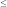
that is reflexive, antisymmetric ( and
and  imply
imply  )
and transitive. The pair
)
and transitive. The pair 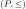
is a partially ordered set. It is totally ordered if any two elements are comparable, and a subset of that is totally ordered by is a chain.
Let
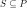
. An upper bound of is
is  with
for all
with
for all 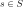
; the supremum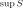
is an upper bound below every upper bound. Lower bound and infimum are defined by reversing the order. An element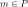
is maximal if implies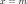
, and a greatest element if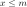
for all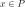
.A subset of a partially ordered set has at most one supremum.
If  and
and
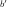
are both suprema of, each is an upper bound
and each lies below every upper bound, so 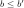
and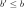
; antisymmetry gives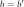
.A lattice is a partially ordered set in which every pair of elements has a supremum and an infimum; it is a complete lattice if every subset has a supremum and an infimum.
If every subset of a partially ordered set has a supremum, then
every subset has an infimum, so is a complete lattice.
Let and let  be the set of lower bounds of
, with
be the set of lower bounds of
, with
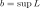
. Every is an upper bound of, so 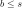
by definition of the supremum: is a lower
bound of . Any lower bound of lies in and hence below
, so 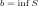
.
Let be a complete lattice and
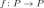
monotone, that is implies 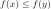
. Then has a fixed
point; indeed
has a fixed
point; indeed 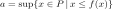
is the greatest one, and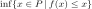
is the least.Let
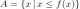
and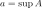
. For we have
we have 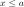
, so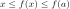
by monotonicity; thus is an upper bound of
is an upper bound of  and
and 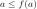
. Applying
to this inequality gives 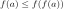
, so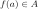
and therefore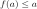
. Antisymmetry gives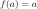
. Any fixed point lies in , hence : the fixed point
lies in , hence : the fixed point  is
the greatest. The statement about the least fixed point is the same
argument in the order-reversed lattice, which is again complete by the
previous proposition.
is
the greatest. The statement about the least fixed point is the same
argument in the order-reversed lattice, which is again complete by the
previous proposition.
No hypothesis here is analytic: the theorem holds in the power set of any set, ordered by inclusion, where suprema are unions. That is the form in which it is used – to construct a set defined by a self-referential closure condition as the least fixed point of a monotone operator – and it is also the shortest route to the Cantor-Schroder-Bernstein theorem.